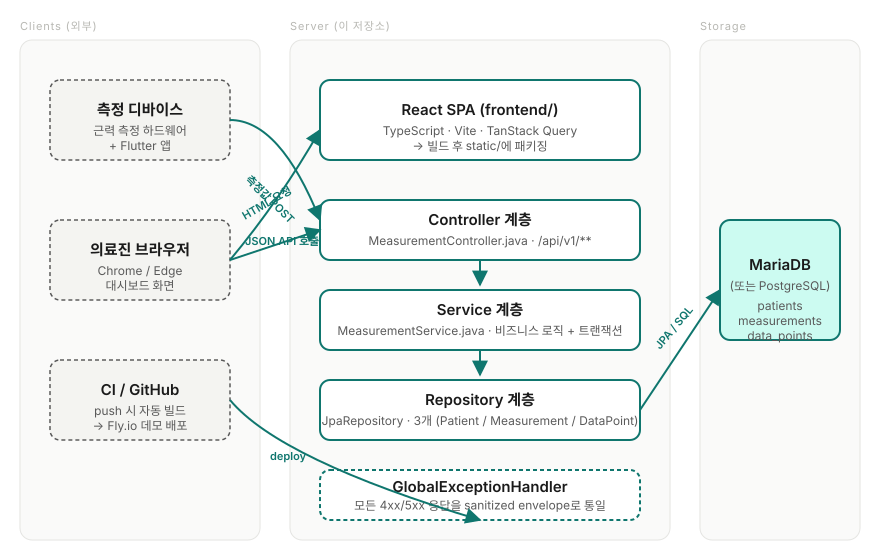

매뉴얼 홈 › 2장 · 전체 그림 이해하기
2장. 전체 그림 이해하기
코드를 한 줄도 안 보고도 "이 시스템이 어떻게 돌아가는지" 머릿속에 그릴 수 있어야 합니다. 이 장은 그 그림을 만드는 장입니다.
2.1 한 장으로 보는 시스템
가운데가 우리(이 저장소), 왼쪽이 외부 클라이언트, 오른쪽이 데이터베이스입니다. 화살표는 누가 누구에게 요청을 보내는지를 의미합니다.

2.2 누가 무엇을 하는지
| 역할 | 구체 | 이 저장소가 만지는가? |
|---|---|---|
| 측정 데이터를 만든다 | 측정 디바이스(하드웨어) + Flutter 앱 | ❌ 다른 저장소 |
| 측정 데이터를 받아 저장한다 | Spring Boot 백엔드 (이 저장소) | ✅ |
| 저장된 데이터를 화면에 보여준다 | React SPA (같은 저장소 frontend/) | ✅ (이 매뉴얼은 백엔드만) |
| 실제 데이터 보관소 | MariaDB (병원 내) 또는 PostgreSQL (Fly.io 데모) | 스키마 정의만 (코드로) |
2.3 요청이 흐르는 길
"의료진이 환자 목록을 보는 순간" 무슨 일이 벌어지는지 따라가 봅시다.
-
브라우저가
https://.../patients페이지를 요청 → 백엔드가index.html을 돌려줌. -
브라우저에서 React SPA가 실행되면서
GET /api/v1/patients라는 JSON API를 호출. -
백엔드의 Controller가 이 요청을 받음
(
MeasurementController.java). -
Controller는 Service에 "환자 목록 줘" 라고
위임 (
MeasurementService.findAllPatients()). -
Service는 Repository에 "DB에서 가져와" 라고
위임 (
PatientRepository.findAll()). -
Repository는 JPA가 자동으로 만들어주는
SELECT * FROM patientsSQL을 DB에 보냄. - 결과가 거꾸로 거슬러 올라와 JSON으로 직렬화되어 브라우저로 돌아감.
기억할 것 거의 모든 요청이 이 Controller → Service → Repository → DB 순서를 따릅니다. 한 번 익숙해지면 새 API를 추가하는 일이 단순한 패턴 반복이 됩니다.
2.4 사용하는 주요 기술
| 이름 | 한 줄 설명 |
|---|---|
| Spring Boot 3.5 | 웹 서버·DI 컨테이너·트랜잭션 등 백엔드 뼈대 |
| Spring Data JPA / Hibernate | Java 객체 ↔ DB 테이블 매핑 (직접 SQL 거의 안 씀) |
| MariaDB / PostgreSQL | 실제 데이터가 저장되는 곳 |
| Lombok |
@Getter, @RequiredArgsConstructor
등으로 보일러플레이트 자동 생성
|
| Gradle (wrapper) | 빌드 도구. ./gradlew 로 실행 |
| JUnit 5 + AssertJ | 테스트 프레임워크 |
| H2 (테스트 전용) | 테스트 돌릴 때만 쓰는 메모리 DB |
2.5 패키지(폴더) 구조 한눈에
src/main/java/com/project/urp/
├── UrpApplication.java ← 진입점 (main 메서드)
├── config/ ← 부팅 시 설정 (CORS 등)
├── controller/ ← HTTP 입구
│ ├── MeasurementController.java
│ └── GlobalExceptionHandler.java
├── service/ ← 비즈니스 로직
│ └── MeasurementService.java
├── repository/ ← DB 접근 (인터페이스만)
│ ├── PatientRepository.java
│ ├── MeasurementRepository.java
│ └── DataPointRepository.java
├── domain/ ← DB 테이블과 1:1 매핑 (Entity)
│ ├── Patient.java
│ ├── Measurement.java
│ └── DataPoint.java
└── dto/ ← 요청/응답 전용 객체
├── PatientDto.java
├── MeasurementSummaryDto.java
└── DataPointDto.java2.6 데이터베이스 테이블 3개
| 테이블 | 의미 | 관계 |
|---|---|---|
patients |
환자 한 명 = 한 행 | — |
measurements |
한 환자의 한 번의 측정 세션 | patient 1 : N measurements |
data_points |
측정 세션 중 1ms 단위 측정값 하나 | measurement 1 : N data_points |
중요 이 시스템은
인증이 없습니다. URL을 아는 누구나 환자 정보를
조회/등록할 수 있습니다. 이는 "동결된 외부 컨트랙트(디바이스 펌웨어
호환)" 때문이며, 자세한 보안 이슈는 워크스페이스 루트의
SECURITY_AUDIT.md 를 보세요. 절대 실제 환자 PII를
인터넷 노출 환경에 올리지 마세요.
🧪 직접 해보기 — 흐름 따라가 보기
1장에서 백엔드를 띄운 상태에서:
curl -v http://localhost:8080/api/v1/patients
로그를 띄운 터미널을 보세요. Hibernate: select ... from patients ...
비슷한 SQL이 찍힌다면, 방금 그 요청이 Controller → Service →
Repository → DB 까지 모두 통과한 증거입니다. (찍히지 않는 게
기본이지만, dev 프로필에서는 켜져 있을 수 있습니다.)